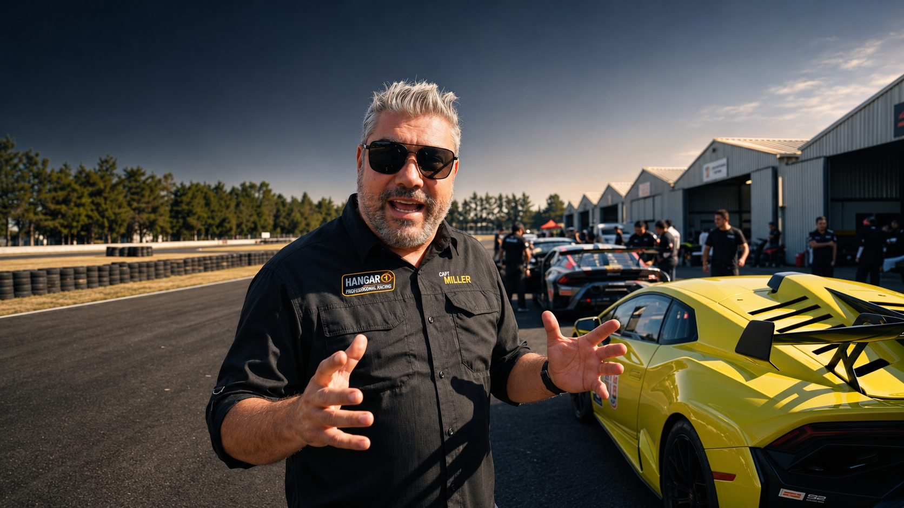
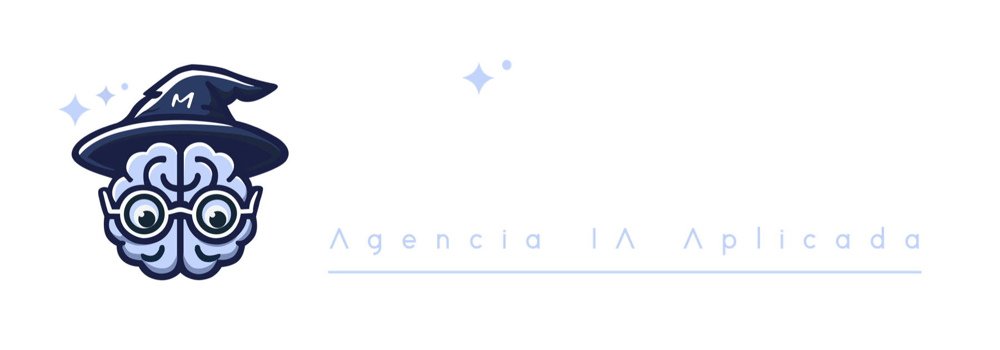
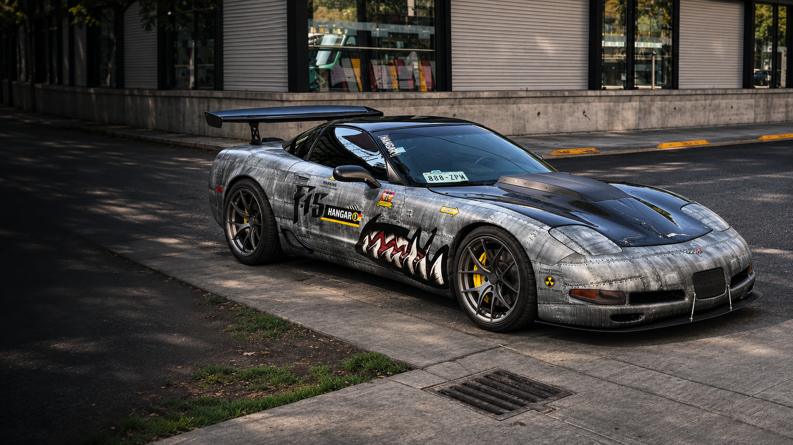
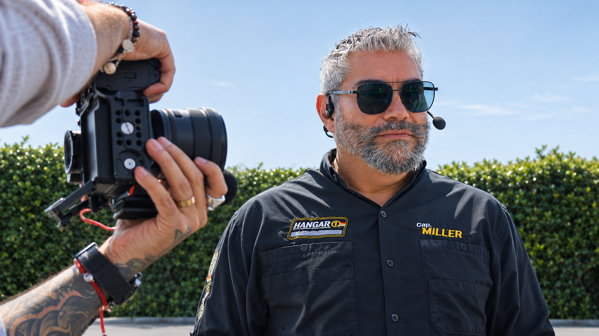
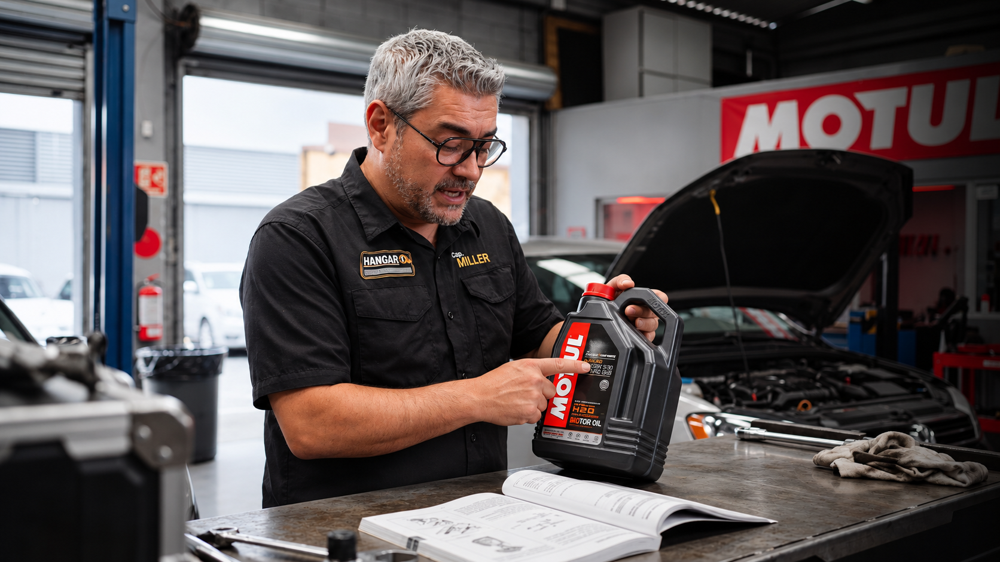
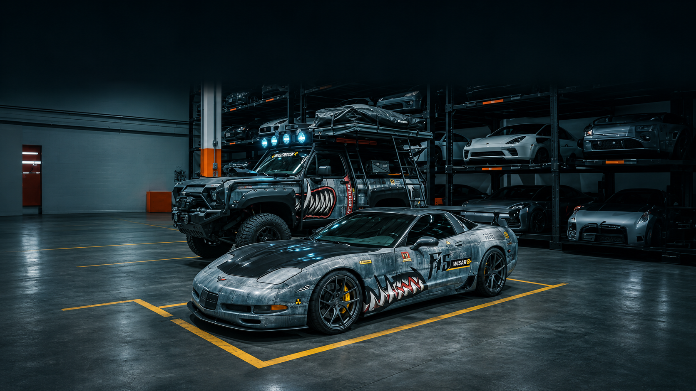

LO QUE YA EXISTECONTENIDOS
Prime Service · First Class · TAA · Fer Miller · Música · TV · Hell Ram · Corvette

01 / 07

SUBJECTFERNANDO MILLER
ENVIRONMENTHANGAR1 / MX
OUTPUT08–10 DIGITAL STORIES
El universo Hangar1, conectado
19.4326° N · 99.1332° W / STORY ARCHITECTURE

MUCHOS CONTENIDOS // MÁS RUTAS DE ENTRADA
Historias que conectanen un ecosistema comercial web.
Hoy contenidos distintos desembocan en el mismo destino. Este ecosistema abre rutas web por audiencia para continuar la historia, resolver dudas y conducir a una acción comercial.

Una misma voz. Más rutas de entrada.
Llevamos cada historia hacia la audiencia correcta y la continuamos en una web hecha para ese interés.
Prime Service · First Class · TAA · Fer Miller · Música · TV · Hell Ram · Corvette
Muscle car fans · tech heads · vintage fans · fans históricos · marketing automotriz · quienes cuidan sus autos · fans de Jeeps
Nuevos funnels experienciales · gaming · trivias · reproductores de música y TV · preventas · eventos digitales · lealtad y cupones · calculadoras · progreso de tuning · recomendaciones automáticas · asistentes virtuales · interacción con Fer Miller

De la emoción a la conversión.
Trasladamos la emoción de un contenido bien hecho a una web que la convierte en intención, contexto y acción comercial.
Continúa la historia + resuelve dudas + comunica promociones + actualiza la oferta comercial.
Usamos tecnologías actuales para crear experiencias, sistemas, tácticos y contenidos que convierten interés en un ingreso correcto al funnel comercial y aumentan la posibilidad de conversión.

¿Cómo lo hacemos?
Wizard lo hace de principio a fin.
Ocho o más sitios experienciales conectan intereses distintos. Wizard construye cada historia con la experiencia de Fer Miller y la dirige hacia una acción comercial.
Cada experiencia digital responde a un objetivo distinto.
Cada afinidad encuentra su entrada correcta al funnel comercial.

Una forma sencilla de trabajar
Ocho experiencias base y hasta dos extensiones, proyecto por proyecto.
TIMING / REF. Aproximadamente 5–6 semanas por proyecto, ajustable al alcance y al programa.
Mapa ilustrativo: el calendario final se acuerda según campañas, alcance y prioridades.
WIZARDCreatividad, producción y desarrollo.
EQUIPO H1Publicación, operación y mantenimiento.
Las ampliaciones posteriores se cotizan como proyectos independientes.
Programa base: ocho experiencias web.
1 mes de crédito para el pago de cada proyecto.
Historia compacta, interacción puntual y CTA comercial.
Mayor narrativa, producción e interacción.
Mayor profundidad creativa, tecnológica o de producción.
01 / CADA BRIEF DEFINE EL NIVELLa inversión se determina proyecto por proyecto según narrativa, producción, interacción e integraciones.
02 / ALCANCE ADICIONALSi el brief rebasa el alcance contemplado en $25,000 MXN, Wizard lo comunicará y cotizará el extra antes de iniciar.
Facturación como persona física. Los impuestos y retenciones aplicables se reflejarán en la factura.